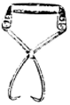
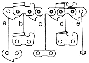

산림기능사 (2011-04-17 기출문제)
1과목: 조림 및 육림기술
1. 산벌작업에서 임지의 종자가 충분히 결실한 해에 종자가 완전히 성숙된 후, 벌채하여 지면에 종자를 다량 낙하시켜 일제히 발아시키기 위한 벌채작업은?
- 후벌
- 종벌
- 예비벌
- 하종벌
(정답률: 71%)

2. 연료림 작업에 가장 적합한 작업종은?
- 개벌작업
- 산벌작업
- 중림작업
- 왜림작업
(정답률: 85%)
3. 임지에 서있는 성숙한 나무로부터 종자가 떨어져 어린나무를 발생시키는 갱신 방법은?
- 맹아갱신
- 인공조림
- 천연하종갱신
- 파종조림
(정답률: 89%)
4. 종자 채집시기와 수종이 알맞게 짝지어진 것은?
- 2월 - 소나무
- 4월 - 섬잣나무
- 7월 - 회양목
- 9월 - 떡느릅나무
(정답률: 89%)
5. 풀베기의 형식 중 조림목의 주변에 나는 잡초목만을 깎아 버리는 방법을 무엇이라 하는가?
- 싹베기
- 모두베기
- 줄베기
- 둘레베기
(정답률: 84%)
6. 가지치기의 장점이 아닌 것은?
- 수고생장을 촉진한다.
- 옹이가 없는 완만재를 생산한다.
- 나무끼리의 생존경쟁을 강화시킨다.
- 산림의 위해를 감소시킨다.
(정답률: 75%)
7. 종자의 품질기준에서의 발아율이 가장 높은 것은?
- 잣나무
- 테다소나무
- 오동나무
- 호두나무
(정답률: 55%)
8. 무육작업이라고 할 수 없는 것은?
- 풀베기
- 솎아베기(간벌)
- 가지치기
- 갱신
(정답률: 90%)
9. 택벌작업 시 벌구의 수를 10개로 만들면 회귀년은 얼마인가? (단, 윤벌기는 100년으로 한다.)
- 5년
- 10년
- 20년
- 30년
(정답률: 87%)
10. 2ha의 임야에 밤나무를 4m간격의 정방형 식재를 하려면 얼마의 밤나무 묘목이 필요한가?
- 250본
- 750본
- 1250본
- 2250본
(정답률: 92%)
11. 간벌을 실시하는 필요성과 관계가 먼 것은?
- 생육공간 조절
- 생장조절
- 임분 수직 구조개선으로 임분 안정화 도모
- 유기물의 생산량 감소
(정답률: 89%)
12. 간벌 시 잔존시켜야 할 나무가 아닌 것은?
- 우량하고 건강하며 크고 가치 있는 나무
- 혼효림 수종으로 가치 있는 나무
- 우량목이나 지표면을 보호하고 있는 나무
- 병든 나무이나 대경목인 나무
(정답률: 93%)
13. 유실수인 밤나무는 보통 1ha 당 몇 본을 식재하는가?
- 400본
- 800본
- 1200본
- 3000본
(정답률: 84%)
14. 제벌을 6~8월 중에 실시하는 가장 적당한 사유는?
- 제거대상목의 맹아력이 약한 기간이므로
- 제벌대상목이 왕성한 성장을 하므로
- 연료생산량이 많으므로
- 작업인부를 구하기 쉬우므로
(정답률: 50%)
15. 다음 중 발아율이 90%, 순량률이 70%인 종자의 효율은?
- 20%
- 63%
- 80%
- 96%
(정답률: 89%)
16. 제벌시기로 적당하지 않은 설명은?
- 겨울철에 실행하는 것이 좋다.
- 여름철에 실행하는 것이 좋다.
- 간벌이 시작될 때까지 2~3회 제벌을 하는 것이 원칙이다.
- 미국에서는 조림목의 흉고직경이 10㎝ 이하인 때 시행한다.
(정답률: 77%)
17. 갱신기간에 제한이 없고 성숙 임분만 일부 벌채되는 작업종은?
- 개벌작업
- 모수작업
- 산벌작업
- 택벌작업
(정답률: 79%)
18. 다음 중 조리수종의 선택 조건에 맞지 않는 것은?
- 가지가 굵고 긴 나무
- 입지 적응력이 큰나무
- 위해(危害)에 대하여 적응력이 큰나무
- 성장속도가 빠른 나무
(정답률: 81%)
19. 덩굴식물을 설명한 것 중 옳지 않은 것은?
- 대체적으로 햇빛을 좋아하는 식물이다.
- 칡이 항상 문제로 되고 있다.
- 덩굴치기의 시기는 덩굴식물이 뿌리속의 저장양분을 소모한 7월경이 좋다.
- 덩굴을 잘라주면 쉽게 제거할 수 있다.
(정답률: 86%)
20. 산림의 효용 중 휴양림의 중용성과 가장 밀접한 관련이 있는 것은?
- 홍수를 방지한다.
- 수원을 조절한다.
- 휴식공간을 조성한다.
- 향료, 약품, 조미료 등을 공급한다.
(정답률: 82%)
21. 씨앗이 싹트는데 필요한 3대 필수 조건이 아닌 것은?
- 온도
- 산소
- 수분
- 토양
(정답률: 88%)
22. 종자의 발아력 조사에 쓰이는 약제는?
- 염소산나트륨
- 황산화탄소
- 테트라졸륨
- 인돌낙산
(정답률: 85%)
23. 노천매장에 관한 설명 중 옳지 않은 것은?
- 종자를 묻을 때에는 종자 부패 방지를 위하여 물이 스며들지 못하도록 한다.
- 종자의 발아촉진을 겸한 저장방법이다.
- 종자와 모래를 섞어서 매장함이 좋다.
- 잣나무, 호두나무 등의 저장법으로 많이 적용되고 있다.
(정답률: 86%)
24. 종자를 체로 쳐서 굵고 작은 협잡물을 분별 하는 정선방법은?
- 입선법
- 수선법
- 풍선법
- 사선법
(정답률: 75%)
25. 파종상에서 그대로 2년을 지낸 실생 묘목의 나이표시법으로 옳은 것은?
- 1 - 1 묘
- 2 - 0 묘
- 0 - 2 묘
- 2 - 1 - 1 묘
(정답률: 89%)
2과목: 산림보호
26. 충분히 자란 유충은 먹는 것을 중지하고 유충시기의 껍질을 벗고 번데기가 되는데, 이와 같은 현상을 무엇이라 하는가?
- 부화
- 용화
- 우화
- 난기
(정답률: 84%)
27. 다음 중 수목병해의 개념 설명이 틀린 것은?
- 생물적 요인에 의한 수목병해는 전염성이다.
- 넓은 의미의 수목병은 수목의 세포나 조직이 생물적 또는 비생물적 요인에 의하여 식물체 기능에 이상증상을 나타내는 것을 말하고, 이것을 표징이라고 한다.
- 수목병의 발생은 3대 요소인 기주, 병원체, 환경의 상호관계에 의해 결정된다.
- 주요 병원으로는 곰팡이, 세균, 선충, 바이러스, 파이토플라스마, 원생동물, 기생성 종자식물이 있다.
(정답률: 57%)
28. 뽕나무 오갈병의 병원균은?
- 진균
- 세균
- 바이러스
- 파이토플라스마
(정답률: 82%)
29. 다음 중 내화력에 가장 강한 수종은?
- 은행나무
- 소나무
- 밤나무
- 전나무
(정답률: 83%)
30. 전신적(全身的) 병원균에 의한 병해에 해당 하는 수병은?
- 오동나무빗자루병
- 소나무혹병
- 잣나무털녹병
- 밤나무줄기마름병
(정답률: 43%)
31. 임업경영상으로 볼 때 벌기(伐期)가 길면 많이 발생하는 해충은?
- 흡수성 해충
- 식엽성 해충
- 천공성 해충
- 뿌리 해충
(정답률: 68%)
32. 아까시나무 모자이크병의 매개충은?
- 솔잎깍지벌레
- 복숭아혹진딧물
- 담배장님노린재
- 솔잎혹파리
(정답률: 59%)
33. 솔나방의 월동형태와 월동장소로 짝지어진 것 중 옳은 것은?
- 알 – 낙엽밑
- 유충 - 낙엽밑
- 성충 – 솔잎
- 번데기 - 나무껍질
(정답률: 62%)
34. 녹병균에 의한 수병은 중간기주를 거쳐야 병이 전염된다. 다음 수종 중 향나무녹병의 중간기주는?
- 송이풀
- 상수리나무
- 꽃아그배나무
- 낙엽송
(정답률: 66%)
35. 수병의 예방법으로 임업적(생태적) 방제법과 거리가 가장 먼 것은?
- 그 지역에 알맞은 조림 수종의 선택
- 위생법에 의한 철저한 식물 검역 제도 도입
- 단순림 보다는 침엽수와 활엽수의 혼효림 조성
- 육림작업을 적기에 실시하고, 벌채를 벌기령에 맞추어 실시
(정답률: 81%)
36. 농약의 사용 목적 및 작용 특성에 따른 분류에서 보조제가 아닌 것은 어느 것인가?
- 전착제
- 증량제
- 용제
- 혼합제
(정답률: 33%)
37. 수목 병해는 병원체의 감염특성으로 인하여 특징적인 병징을 만든다. 아래의 병명 중 바이러스에 의하여 발생되는 병은 무엇인가?
- 흰가루병
- 떡병
- 모자이크병
- 청변병
(정답률: 94%)
38. 훈증제가 갖추어야 할 조건이 아닌 것은?
- 휘발성이 커서 일정한 시간 내에 살균 또는 살충시킬 수 있어야 한다.
- 인화성이어야 한다.
- 침투성이 커야 한다.
- 훈증할 목적물의 이화학적, 생물학적 변화를 주어서는 안 된다.
(정답률: 79%)
39. 다음은 솔노랑잎벌의 가해형태를 설명한 것이다. 바르게 설명한 것은?
- 봄에 부화한 유충이 새로 나온 잎을 갉아 먹는다.
- 새순의 줄기에서 수액을 빨아 먹는다.
- 솔잎의 기부를 잘라서 먹는다.
- 전년도 잎을 끝에서부터 기부를 향하여 가해한다.
(정답률: 64%)
40. 기생식물에 의한 피해인 새삼에 대한 설명이다. 옳지 않는 것은?
- 1년생 초본식물이다.
- 잎은 비닐잎처럼 생기고 삼각형이며 길이가 2㎜ 내외이다.
- 꽃은 2~3월에 피며 희고 덩어리처럼 된다.
- 기주식물의 조직 속에 흡근을 박고 양분을 섭취한다.
(정답률: 64%)
3과목: 임업기계일반
41. 노동의 경중에 따른 에너지 대사율 중 임업 노동이 속하는 중노동 작업은 얼마인가?
- 0~1
- 1~2
- 4~7
- 7이상
(정답률: 72%)
42. 기계톱의 일일정비 및 점검사항에 해당하지 않는 것은?
- 안내판의 손질
- 에어필터의 청소
- 연료필터의 청소
- 휘발유와 오일의 혼합
(정답률: 71%)
43. 내연기관에 있어서 열기관이란 무엇인가?
- 연료를 연소시켜 질적 에너지를 양적 에너지로 바꾼다.
- 연료를 연소시켜 열에너지를 기계적 에너지로 바꾼다.
- 연료를 연소시켜 기계적 에너지를 열에너지로 바꾼다.
- 연료를 연소시켜 화학적 에너지로 바꾼다.
(정답률: 77%)
44. 일반적으로 가솔린과 오일을 25 : 1로 혼합하여 연료로 사용하는 기계장비로 묶어져 있는 것은?
- 예불기, 기계톱
- 예불기, 타워야더
- 파미윈치, 타워야더
- 파미윈치, 아크야윈치
(정답률: 89%)
45. 산림집재작업 방법 중에서 사용하는 동력에 따른 종류에 속하지 않는 것은?
- 인력에 의한 집재 작업
- 축력에 의한 집재 작업
- 자력에 의한 집재 작업
- 기계력에 의한 집재 작업
(정답률: 61%)
46. 기계톱에서 톱니의 1피치(인치)는 어떻게 표시하는가?
- 2개의 리벳간의 간격을 3으로 나눈 것
- 3개의 리벳간의 간격을 2로 나눈 것
- 5개의 리벳간의 간격을 3으로 나눈 것
- 3개의 리벳간의 간격을 5로 나눈 것
(정답률: 87%)
47. 다음 그림의 명칭과 사용되는 용도가 바르게 연결된 것은?

- 스웨디쉬형 갈고리 - 소경재 인력 집재
- 손잡이형 갈고리 - 대경재 인력 집재
- 슈바쯔발더형 방향 갈고리 - 대경재 인력집재
- 박크셔 방향 갈고리 - 벌도목의 방향유도
(정답률: 82%)
48. 다음 중 윤활유로서 구비해야 할 성질이 아닌 것은?
- 유성이 좋아야 한다.
- 점도가 적당해야 한다.
- 온도에 의한 점도의 변화가 커야 한다.
- 부식성이 없어야 한다.
(정답률: 87%)
49. 다음 중 기계톱의 안전장치가 아닌 것은?
- 전방손보호판
- 에어필터
- 스로틀레버 차단판
- 체인브레이크
(정답률: 93%)
50. 산림작업 시 안전사고 예방을 위하여 지켜야할 사항과 거리가 먼 것은?
- 작업 실행에 심사숙고 할 것
- 긴장하지 말고 부드럽게 할 것
- 휴식직후에는 서서히 작업속도를 높일 것
- 휴식과는 관계없이 능률을 높이기 위하여 열심히 할 것
(정답률: 92%)
51. 와이어로프 교체 기준이 아닌 것은?
- 킹크가 발생한 경우
- 소선이 절단된 경우
- 형태 변형 및 부식이 현저한 경우
- 와이어로프 직경의 감소가 공칭 직경 5% 이내인 경우
(정답률: 89%)
52. 기계톱의 엔진에서 스파크플러그의 적정 전극간격은 얼마인가?
- 0.1~0.2㎜
- 0.2~0.3㎜
- 0.3~0.4㎜
- 0.4~0.5㎜
(정답률: 52%)
53. 다음 중 4행정 점화기관의 사이클 작동순서로 가장 맞는 것은?
- 흡입 → 압축 → 팽창 → 배기
- 흡입 → 팽창 → 압축 → 배기
- 압축 → 흡입 → 팽창 → 배기
- 팽창 → 흡입 → 압축 → 배기
(정답률: 88%)
54. 구입비가 30, 000, 000원인 트랙터의 매년 일정액의 감가상각비를 구하면? (단, 잔존가격은 취득원가의 10%이고 상각율은 0.2이며, 정액법을 이용하여 계산한다.)
- 1, 000, 000원
- 2, 500, 000원
- 4, 500, 000원
- 5, 400, 000원
(정답률: 70%)
55. 기계톱을 장기보관 시 주의사항으로 옳지 않은 것은?
- 연료와 오일을 가득 채워 놓는다.
- 특수오일로 엔진 내부를 보호한다.
- 1년에 1회씩 전문적인 검사를 받도록 한다.
- 건조한 방에서 먼지가 들어가지 않도록 보관한다.
(정답률: 89%)
56. 특별한 경우를 제외하고 도끼자루를 사용하기에 적합한 길이는?
- 사용자 팔 길이
- 사용자 팔 길이의 2배
- 사용자 팔 길이의 0.5배
- 사용자 팔 길이의 1.5배
(정답률: 86%)
57. 다음 중 기계톱의 사용 용도가 아닌 것은?
- 인력벌목
- 풀베기
- 조림지 정리 작업
- 지타 작업
(정답률: 81%)
58. 우리나라의 임업기계화 작업을 위한 제약인 자가 아닌 것은?
- 험준한 지형조건
- 풍부한 전문기능인
- 기계화 시업의 경험부족
- 영세한 경영규모
(정답률: 79%)
59. 안내판 홈이 마모되어 홈의 간격이 체인 연결쇠(그림a)의 도께보다 클 경우에 기계톱 작동 시 압력을 가하면 어떻게 되는가?

- 체인이 가동되지 않고 정지한다.
- 절삭률이 높아져 기계 효율이 높아진다.
- 절삭 방향이 삐뚤어 나갈 위험이 높다.
- 연료 소모량이 낮아진다.
(정답률: 81%)
60. 다음 중 임업기계의 외관검사 정비방법에 대한 설명으로 틀린 것은?
- 기계의 외관이나 분해하지 않아도 볼 수 있는 내부를 검사하여, 볼트, 너트, 나사류의 조임, 결손 등을 점검 한다.
- 회전을 정지하여 각 축 부위의 발열 상태를 점검할 때 뜨겁게 느껴질 때에는 이상이 발생한 것이다.
- 주철제 브레이크 드럼, 기어박스 등을 맨손으로 만져보아 점검한다.
- 오일유출은 없는가 확인하고 밀폐된 기어박스 등으로부터 오일이 나오고 있는 경우에는 오일씰의 마모된 스켓의 불량 등을 생각할 수 있다.
(정답률: 80%)